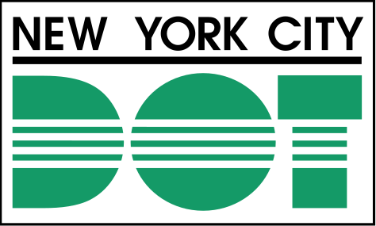

Team & Partners
Director

Rumi Chunara, PhD
Director
Associate Professor, Department of Biostatistics and Computer Science & Engineering
NYU School of Global Public Health and Tandon School of Engineering

Prince Michael Amegbor, PhD
Associate Director
Assistant Professor, Department of Global and Environmental Health
NYU School of Global Public Health
Core Team
Dongkyu Cho
PhD Student
Jonghwan Kim
PhD Student
Aditya Jain
PhD Student
We also work with many master’s students who make important contributions across our research projects. Their involvement is highlighted through our project pages, publications and news.
Visitors


PhD Alumni
| Name | Subsequent position |
|---|---|
| Miao Zhang | Amazon Health |
| Nabeel Abdur Rehman | Data Scientist, Kaiser Permanente |
| Harvineet Singh | UCSF |
| Vishwali Mhasawade | NYU Langone |
| Yuan Zhao | Meta |
The Center for Health Data Science brings together expertise across New York University and collaborates with health systems, government agencies, academic institutions, and community organizations to advance research and its application to population health. Our work is supported by funding from public, private, and philanthropic organizations.
Across NYU
Research and Community Collaborations
- NYC Department of Transportation

- NYC Health + Hospitals
- Max Planck Institute for Demographic Research

- University of Central Asia

Funding and Support
- NYC Department of Transportation
- Bill & Melinda Gates Foundation

- The Rockefeller Foundation

- National Science Foundation

- National Institutes of Health

- International Growth Centre

- Optum


- Blue Cross Blue Shield of Louisiana

- Adobe